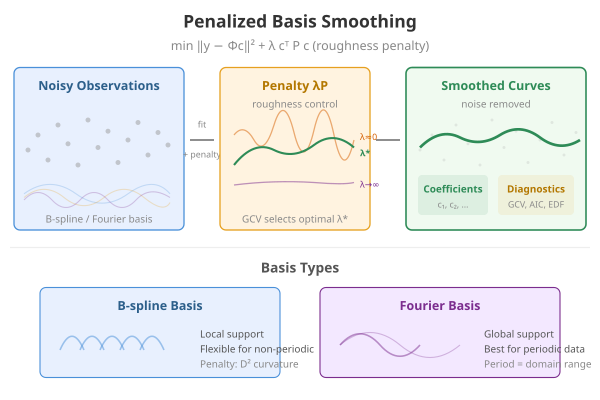
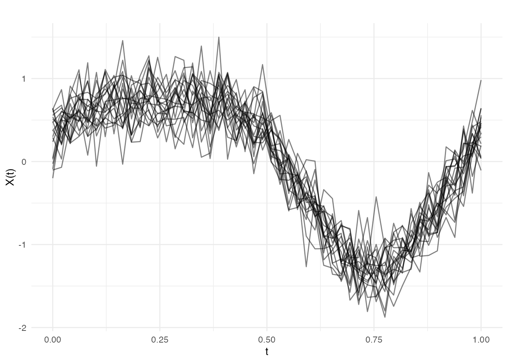
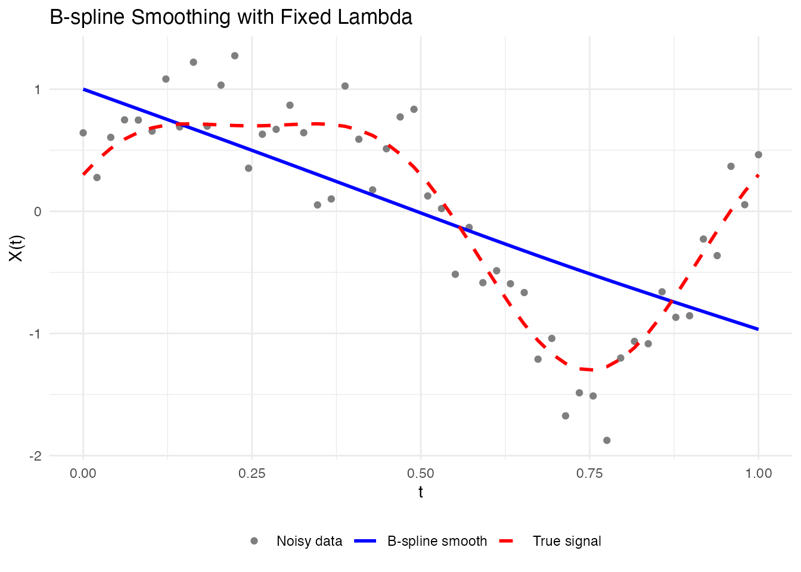
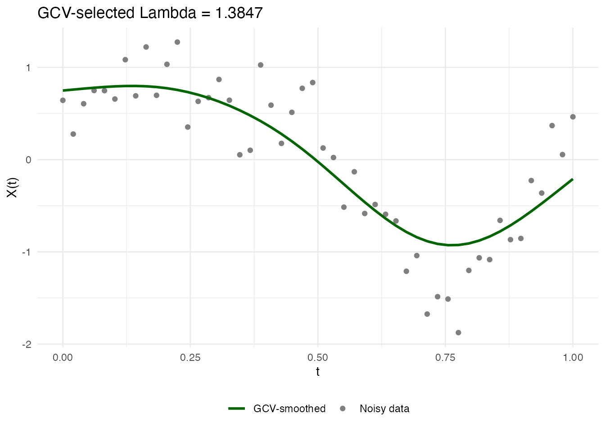
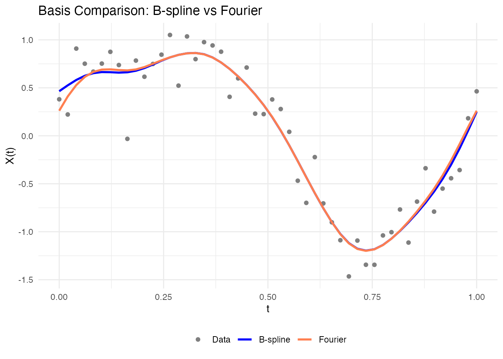
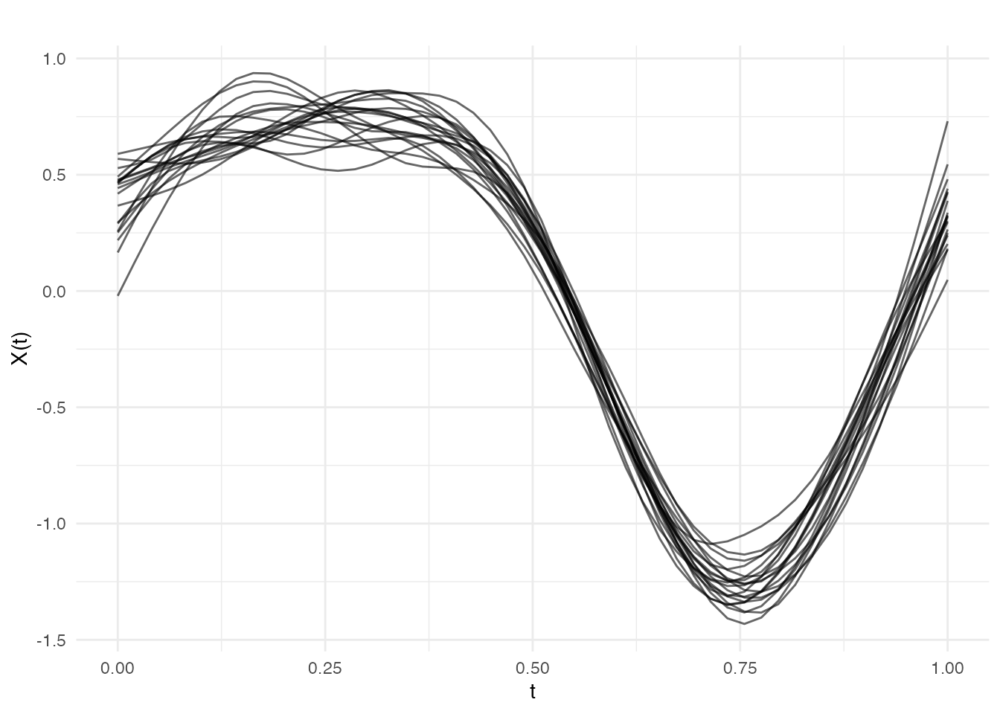
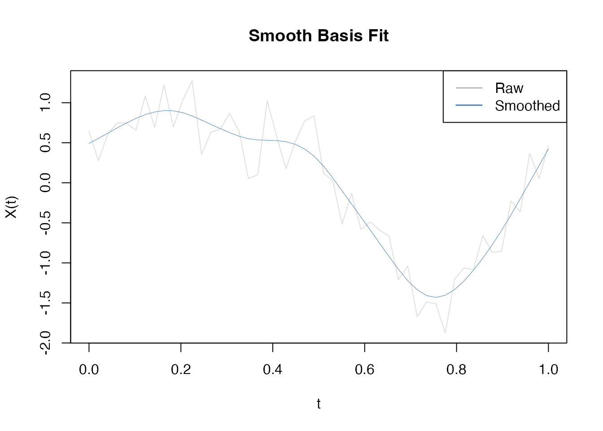
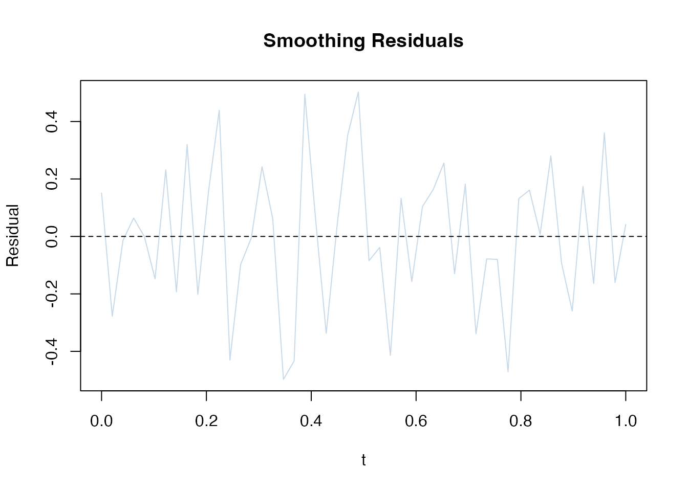

Introduction
Penalized basis smoothing combines two powerful ideas: representing curves as basis expansions and automatically selecting smoothness through penalties. Unlike simple basis projection (which fixes the number of basis functions), penalized smoothing uses a fixed set of basis functions but adds a penalty term that discourages roughness.
This approach offers:
- Automatic smoothing: GCV selects the optimal smoothing parameter without manual tuning
- Flexible fit: Uses many basis functions but controls complexity through penalties
- Derivative-friendly: Smooth coefficients lead to interpretable derivatives
- B-spline and Fourier: Choose the basis type that matches your data structure

Creating Simulated Data
Let’s create functional data with known signal and noise:
# Generate noisy functional data
t <- seq(0, 1, length.out = 50)
n_curves <- 20
# True underlying signal: smooth function with features
true_signal <- function(t) sin(2 * pi * t) + 0.3 * cos(4 * pi * t)
# Generate noisy observations
X <- matrix(0, n_curves, length(t))
for (i in 1:n_curves) {
X[i, ] <- true_signal(t) + rnorm(length(t), sd = 0.25)
}
fd_noisy <- fdata(X, argvals = t)
# Plot raw data
plot(fd_noisy, main = "Noisy Functional Data",
xlab = "t", ylab = "X(t)", alpha = 0.5)
Fixed Lambda Smoothing with smooth.basis.fd()
When you know or want to fix the smoothing parameter
,
use smooth.basis.fd(). The penalty term balances data fit
with smoothness:
where is a difference matrix encoding roughness.
B-spline Smoothing
# Smooth with B-spline basis, fixed lambda
result_bs <- smooth.basis.fd(
fd_noisy,
type = "bspline",
nbasis = 25,
lambda = 1.0,
lfd.order = 2
)
# Inspect result
print(result_bs)
#> Penalized Basis Smoothing
#> Basis type: bspline
#> Number of basis functions: 25
#> Lambda: 1
#> EDF: 2.1
#> GCV: 0.342717
# Extract components
fitted_curves <- result_bs$fitted
coef_matrix <- result_bs$coefficients
edf <- result_bs$edf # Effective degrees of freedom
cat("Effective df:", edf, "\n")
#> Effective df: 2.115902Visualization
# Compare first curve: data vs fit
idx <- 1
df_compare <- data.frame(
t = rep(t, 3),
value = c(fd_noisy$data[idx, ],
result_bs$fitted$data[idx, ],
true_signal(t)),
type = factor(rep(c("Noisy data", "B-spline smooth", "True signal"),
each = length(t)),
levels = c("Noisy data", "B-spline smooth", "True signal"))
)
ggplot(df_compare, aes(x = t, y = value, color = type, linetype = type)) +
geom_point(data = subset(df_compare, type == "Noisy data"), size = 1.5) +
geom_line(data = subset(df_compare, type != "Noisy data"), linewidth = 1) +
scale_color_manual(
values = c("Noisy data" = "gray50", "B-spline smooth" = "blue",
"True signal" = "red")
) +
scale_linetype_manual(
values = c("Noisy data" = "blank", "B-spline smooth" = "solid",
"True signal" = "dashed")
) +
labs(title = "B-spline Smoothing with Fixed Lambda",
x = "t", y = "X(t)", color = NULL, linetype = NULL) +
theme(legend.position = "bottom")
Fourier Smoothing
For periodic data, Fourier basis is more natural:
# Smooth with Fourier basis
result_fourier <- smooth.basis.fd(
fd_noisy,
type = "fourier",
nbasis = 21, # Fourier needs odd number
lambda = 0.5,
period = 1.0 # Period of the data
)
print(result_fourier)
#> Penalized Basis Smoothing
#> Basis type: fourier
#> Number of basis functions: 21
#> Lambda: 0.5
#> EDF: 1.1
#> GCV: 0.602229Automatic Lambda Selection with smooth.basis.gcv()
The key advantage of penalized smoothing is automatic parameter selection using Generalized Cross-Validation (GCV). This avoids manual tuning:
where RSS is residual sum of squares and edf is effective degrees of freedom.
GCV-based Smoothing
# Automatic lambda selection via GCV
result_gcv <- smooth.basis.gcv(
fd_noisy,
type = "bspline",
nbasis = 25,
lfd.order = 2,
log.lambda.range = c(-2, 2),
n.grid = 20
)
print(result_gcv)
#> Penalized Basis Smoothing
#> Basis type: bspline
#> Number of basis functions: 25
#> Lambda: 1.385
#> EDF: 4
#> GCV: 0.141358
cat("Selected lambda:", result_gcv$lambda, "\n")
#> Selected lambda: 1.384708
cat("GCV score:", result_gcv$gcv, "\n")
#> GCV score: 0.1413581Visualization of GCV Selection
# GCV often computes multiple lambda values internally
# Plot shows how GCV score varies with lambda
idx <- 1
df_fit <- data.frame(
t = rep(t, 2),
value = c(fd_noisy$data[idx, ], result_gcv$fitted$data[idx, ]),
type = rep(c("Noisy data", "GCV-smoothed"), each = length(t))
)
ggplot(df_fit, aes(x = t, y = value, color = type)) +
geom_point(data = subset(df_fit, type == "Noisy data"), size = 1.5) +
geom_line(data = subset(df_fit, type == "GCV-smoothed"), linewidth = 1) +
scale_color_manual(
values = c("Noisy data" = "gray50", "GCV-smoothed" = "darkgreen")
) +
labs(title = paste("GCV-selected Lambda =", round(result_gcv$lambda, 4)),
x = "t", y = "X(t)", color = NULL) +
theme(legend.position = "bottom")
Information Criteria Comparison
The smooth.basis.gcv() object includes multiple
criteria:
B-spline vs Fourier Comparison
When to Use Each
| Aspect | B-spline | Fourier |
|---|---|---|
| Best for | Non-periodic data | Periodic/seasonal data |
| Local support | Yes (local basis) | No (global basis) |
| Boundary behavior | Good | May show ringing |
| Derivative smoothness | Good | Excellent |
| Computational efficiency | Very fast | Fast |
Direct Comparison
# Smooth same data with both bases
result_bs <- smooth.basis.gcv(fd_noisy, type = "bspline", nbasis = 25)
result_fourier <- smooth.basis.gcv(fd_noisy, type = "fourier", nbasis = 21)
# Compare fit quality
cat("B-spline GCV:", result_bs$gcv, "\n")
#> B-spline GCV: 0.07319206
cat("Fourier GCV:", result_fourier$gcv, "\n")
#> Fourier GCV: 0.07146269
cat("B-spline EDF:", result_bs$edf, "\n")
#> B-spline EDF: 8.337083
cat("Fourier EDF:", result_fourier$edf, "\n")
#> Fourier EDF: 7.294185
# Plot comparison
idx <- 2
df_comp <- data.frame(
t = rep(t, 3),
value = c(fd_noisy$data[idx, ],
result_bs$fitted$data[idx, ],
result_fourier$fitted$data[idx, ]),
method = factor(rep(c("Data", "B-spline", "Fourier"), each = length(t)),
levels = c("Data", "B-spline", "Fourier"))
)
ggplot(df_comp, aes(x = t, y = value, color = method)) +
geom_point(data = subset(df_comp, method == "Data"), size = 1.5) +
geom_line(data = subset(df_comp, method != "Data"), linewidth = 1) +
scale_color_manual(values = c("Data" = "gray50", "B-spline" = "blue",
"Fourier" = "coral")) +
labs(title = "Basis Comparison: B-spline vs Fourier",
x = "t", y = "X(t)", color = NULL) +
theme(legend.position = "bottom")
Smoothing Multiple Curves
smooth.basis.fd() and smooth.basis.gcv()
automatically handle all curves:
# Smooth entire dataset with GCV
result_all <- smooth.basis.gcv(
fd_noisy,
type = "bspline",
nbasis = 25,
lfd.order = 2
)
# All curves are smoothed
cat("Smoothed dataset shape:", nrow(result_all$fitted$data),
"curves x", ncol(result_all$fitted$data), "points\n")
#> Smoothed dataset shape: 20 curves x 50 points
# Plot all smoothed curves
plot(result_all$fitted, alpha = 0.6,
main = "All Curves Smoothed with Penalized B-splines")
Diagnostic Plots
# For a single curve result
single_result <- smooth.basis.gcv(fd_noisy[1], type = "bspline", nbasis = 25)
# Plot fit quality
plot(single_result, type = "fit")
# Plot residuals
plot(single_result, type = "residuals")
Comparison: smooth.basis vs fdata2basis
| Function | Approach | Best For | Parameter Selection |
|---|---|---|---|
| fdata2basis() | Basis projection (no penalty) | Fixed complexity | Manual nbasis choice |
| smooth.basis.fd() | Penalized basis (fixed λ) | Known smoothness | Manual lambda |
| smooth.basis.gcv() | Penalized basis (auto λ) | Automatic tuning | GCV/AIC/BIC |
When to Use Each
# Use fdata2basis() when:
# - You have a specific model in mind
# - You want fast computation without penalty overhead
# - Dimensionality reduction is your goal
# Use smooth.basis.fd() when:
# - You know the optimal smoothness parameter
# - You want explicit control over lambda
# - You're comparing methods with fixed settings
# Use smooth.basis.gcv() when:
# - You want automatic tuning (recommended default)
# - You're doing exploratory analysis
# - You need data-driven smoothing parameter selectionSummary
Penalized basis smoothing provides:
- Flexibility: Fixed set of basis functions with adaptive smoothness
- Automation: GCV automatically selects smoothing parameter
- Quality derivatives: Smooth coefficients → interpretable derivatives
- Choice: B-spline for non-periodic, Fourier for periodic data
Practical recommendation: Start with
smooth.basis.gcv() using the default settings. Increase
nbasis if you suspect underfitting, or increase
log.lambda.range upper bound if the GCV curve looks
flat.